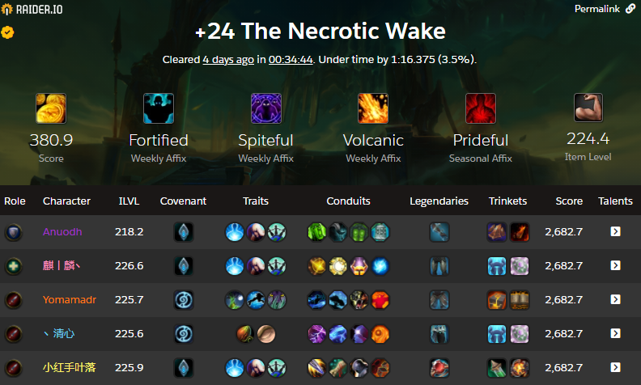
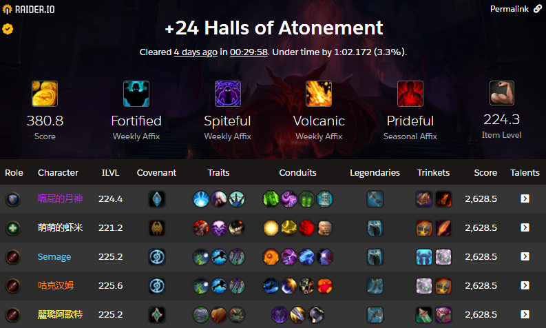

World First Shadowlands +24 Mythic Dungeon Completed In Time
A huge congratulations to the Vengeance
Demon Hunter Anuodh, Holy
Paladin 麒丨麟丶,
Fire Mage 丶清心,
Balance Druid Yomamadr , and Outlaw
Rogue 小红手叶落 for finishing +24 Necrotic Wake in 34 minutes and 44 seconds - the world first +24 Mythic Dungeon of Shadowlands Season One to be completed within time!

Composition wise, virtually all of the top keys use Demon Hunter tanks due to the extra utility they provide over other tanks, and although Holy Paladin is less common than Restoration Shaman it's still fairly well represented at the high end. Balance Druids, Fire Mages, and Outlaw Rogues are very common DPS, so nothing out of the ordinary there aside from excellent execution.
Composition wise, virtually all of the top keys use Demon Hunter tanks due to the extra utility they provide over other tanks, and although Holy Paladin is less common than Restoration Shaman it's still fairly well represented at the high end. Balance Druids, Fire Mages, and Outlaw Rogues are very common DPS, so nothing out of the ordinary there aside from excellent execution.
Several hours later, the Chinese team that achieved the World First +23 also completed a +24 in time. Congratulations to both teams!
It's also worth noting that due to staggered weekly resets, these dungeons were completed with last week's affixes for NA/EU, not with Bolstering, Necrotic, Tyrannical which is considered one of the hardest combinations.

Even if you're not pushing the cutting edge of Mythic+ progression, it's worth familiarizing yourself with all of the Mythic+ changes in Shadowlands Season One: end of dungeon cache changes, what you need to do to maximize your weekly rewards from the Great Vault, the new Полный гордыни seasonal affix, and other affix additions and removals - all of this and more can be found inside our Shadowlands Season 1 Mythic+ Dungeon guide!


{kind=link}
{kind=link}